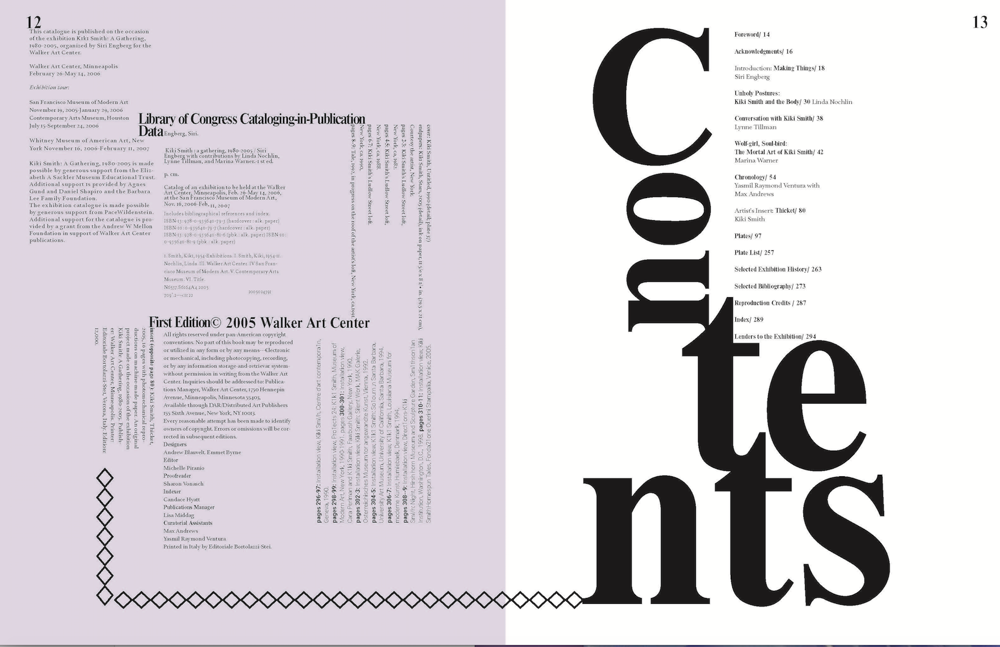
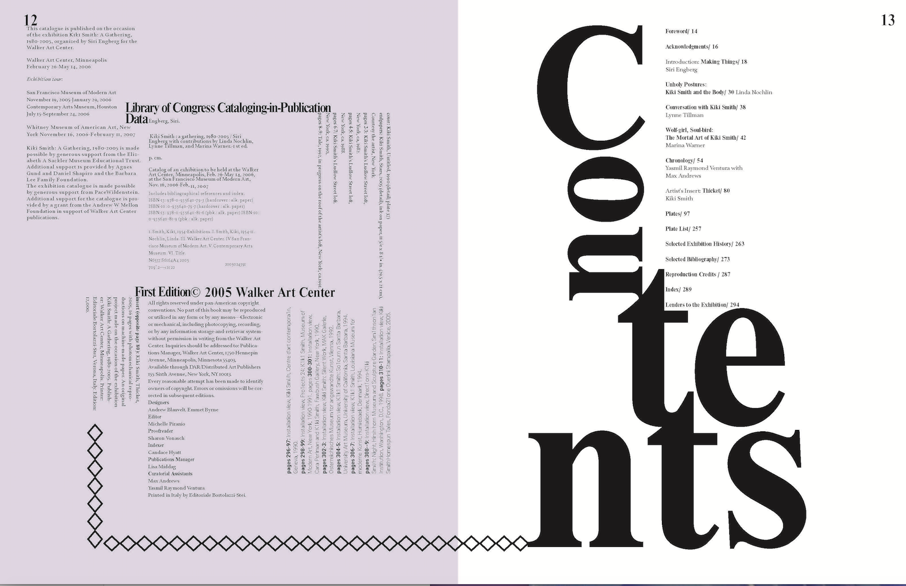

Pick one designer or publication from the given list and do an extensive research on your chosen subjects. Once you make your choice you will then target on book or issue/volume of a publication. Then you will do a two-step process of deconstructing and then reconstructing it’s typographic system.
I decided that I wanted to look at Walker Art Center and for my publication I choose a book based of the Kiki Smith Exhibition A Gathering: 1980-2005
 
